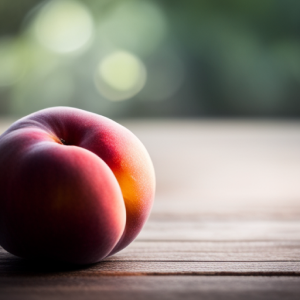

Fruits
Welcome to our farm, where we take pride in growing a variety of delicious and nutritious fruits. Our commitment to sustainable farming practices ensures that every bite of our fruit is bursting with natural flavor and goodness. From the orchard to your table, we offer a selection of fresh, hand-picked fruits that are perfect for snacking, baking, and cooking. Experience the taste of nature's bounty with our premium quality fruits.
Fruits for Sale

Apples

Oranges

Peaches

Strawberries

Blueberries

Raspberries

Cherries

Pears

Plums

Grapes

Watermelons

Cantaloupes